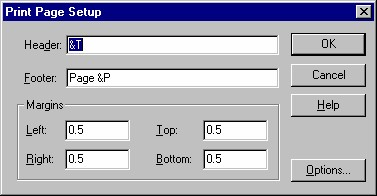
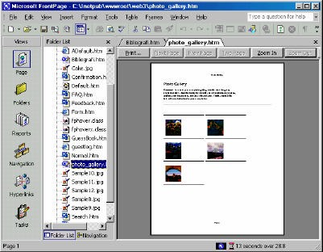
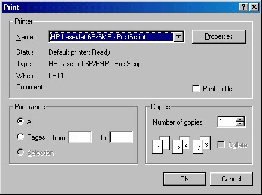

5 Mencetak Halaman
Apa yang Anda lihat belum tentu sama seperti hasil pencetakan pada kertas. Masalah
ini timbul karena adanya hyperteks (link) sehingga tidak ada batas atas maupun batas
bawah, atau tidak ada halaman pertama maupun halaman akhir, semua halaman
saling terkait, seolah tidak memiliki ujung.
Ada tiga perintah yang berkaitan dengan pencetakan, yaitu Page Setup, Print
Preview dan Print. Perintah ini bekerja persis seperti yang ada di pengolah kata, jadi
pembahasan secara detil tidak perlu lagi.
Baik, secara garis besar fasilitas atau cara pengoperasian pencetakan suatu halaman,
adalah:
• Untuk menentukan header, footer dan batas halaman, aktifkan perintah
File_Page Setup. Kotak dialog Page Setup akan tampil seperti Gambar
4.10.

Gambar 4.10 Kotak dialog Page Setup
• Untuk melihat hasil pracetak, aktifkan perintah File _ Print Preview.
FrontPage XP akan menampilkan hasil pracetak seperti Gambar 4.11.

Gambar 4.11 Tampilan Print Preview
• Untuk mencetak halaman, aktifkan perintah File _ Print atau klik tombol
Print…. Tampil kotak dialog Print seperti Gambar 4.12.

Gambar 4.12 Kotak dialog Print
Copyright © Herlan Lesmana
Created with the Freeware Edition of HelpNDoc: Free help authoring environment